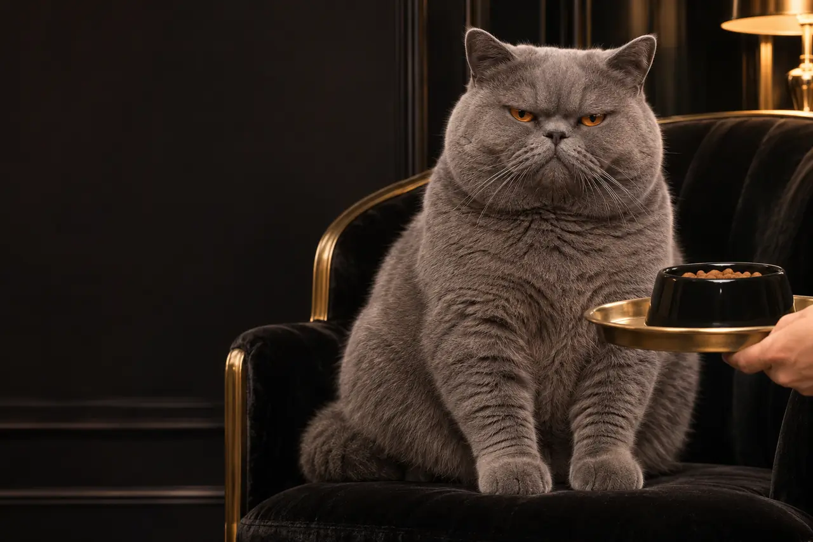

Prywatny magazyn Jego MrucznościWydanie domowe · standard królewski
EST. 2026 · DZIENNIK DOBRZE USTAWIONEGO KOTAkoci.notatnik
Luksus mam we krwi. Człowieka — na etacie.

Osobisty blog kota o nienagannym guście
Znalazłem człowieka. Teraz żyję jak należy.
Sam wybrałem tego człowieka. Miał mieszkanie, kciuki i twarz kogoś, kto przeprosi za zajmowanie własnej kanapy. Teraz ja żyję luksusowo, a on pyta, czy może wstać.
Kochani, personel kupił mi legowisko premium. Wypakował je z namaszczeniem, poprawił poduszkę i czekał na zachwyt. Wszedłem do kartonu. Uwielbiam sztukę z zaskakującym zakończeniem.
Człowiek wrócił do domu. Przywitałem go policzkiem, potem podpisałem futrynę i narożnik komody. On uznał, że się stęskniłem. Pozwalam mu zachować tę ładną wersję wydarzeń.
Leżałem na plecach, prezentując futro klasy reprezentacyjnej. Człowiek zobaczył brzuch i od razu wyciągnął rękę. To niezwykłe, jak szybko potrafi źle zrozumieć coś pięknego.
Człowiek spojrzał na mnie i powiedział, że znowu śpię. Tak, kochany. Już trzeci raz przerywasz mi tę samą czynność, a nadal twierdzisz, że to ja niczego nie kończę.
Personel rozłożył koc. Sprawdziłem fakturę łapką. Potem drugą. Potem zacząłem produkcję. Człowiek powiedział, że robię bułeczki. Jak zwykle zobaczył pracującego i od razu pomyślał o jedzeniu.
Postanowiłem okazać człowiekowi odrobinę sympatii. Spojrzałem na niego i powoli przymknąłem oczy. — Śpiący? — zapytał. Przy tym poziomie romantyzmu nawet karton wydaje się rozmowny.
Człowiek kupił kanapę i powiedział: „Tylko jej nie zniszcz”. Kochani, skąd ten brak wiary? Ja nigdy niczego nie robię byle jak. Nawet uwagi do tapicerki są u mnie odręczne.
Człowiek jadł ciasto i powiedział: „Ty i tak nie czujesz słodkiego”. Co za wygodny argument. Ty nie czujesz jakości mojej nowej poduszki, a jednak codziennie na niej siadasz.
Człowiek zgasił światło i powiedział „idziemy spać”. Kochani, uwielbiam, gdy przedstawia propozycję tak, jakby była decyzją. O 23:47 rozpocząłem kwalifikacje do mistrzostw korytarza.
Człowiek naciska migawkę. Ja robię całą resztę, czyli wyglądam.
01Wybrałem człowieka. Obsługa nadal w okresie próbnym.02Testuję amortyzację personelu. Wyniki utajniłem.03Pakiet dwóch głasków został wyczerpany.04Apartament zatwierdzony. Zamieszkam w opakowaniu.05Miał być salon VIP. Ten człowiek słucha mi klatki piersiowej.06Zamówiłem serwis łapki. Aquapark odwołany.07Moje pazury mają rzecznika. Jestem nim ja.08Brzuch do podziwiania. Pozwolenia na budowę brak.09Nie śledzę. Prowadzę niezapowiedziany audyt personelu.10Grawitacja sprawna. Refleks personelu do poprawy.11Firmowa łyżeczka gotowa. Personel zgłasza zastrzeżenia.12Wybrałem wersję z naturalnej tektury. Człowiek sprawdza paragon.13Podpis złożono policzkiem. Proszę nie ścierać właściciela.14Ekspozycja otwarta. Zwiedzanie bez dotykania.15Zebranie zarządu trwa. Proszę nie budzić przewodniczącego.16Produkcja ręczna. Dostawy bułek nie przewidziano.17Wysłałem ciepły komunikat. Odbiorca szuka tłumaczenia.18Podpis autora przeniesiono na dedykowany nośnik.19Deser zabezpieczony. Ocena człowieka nadal otwarta.20Zarząd na piętrze. Obsługa zgłasza się z parteru.21Trasa zatwierdzona. Człowiek nie zakwalifikował się do finału.
Kliknij zdjęcie, żeby przyjrzeć się standardom. Personelowi też warto pokazać.
Z każdej historii coś wyniesiesz
Śmiej się z człowieka. Przy okazji zrozum kota.
Najpierw się pośmiejesz, a na końcu każdej opowieści dostaniesz konkretne wskazówki dla swojego człowieka. Mój korzysta. Powoli. Nie wymagajmy od razu cudów — wczoraj szukał telefonu, trzymając go w dłoni.